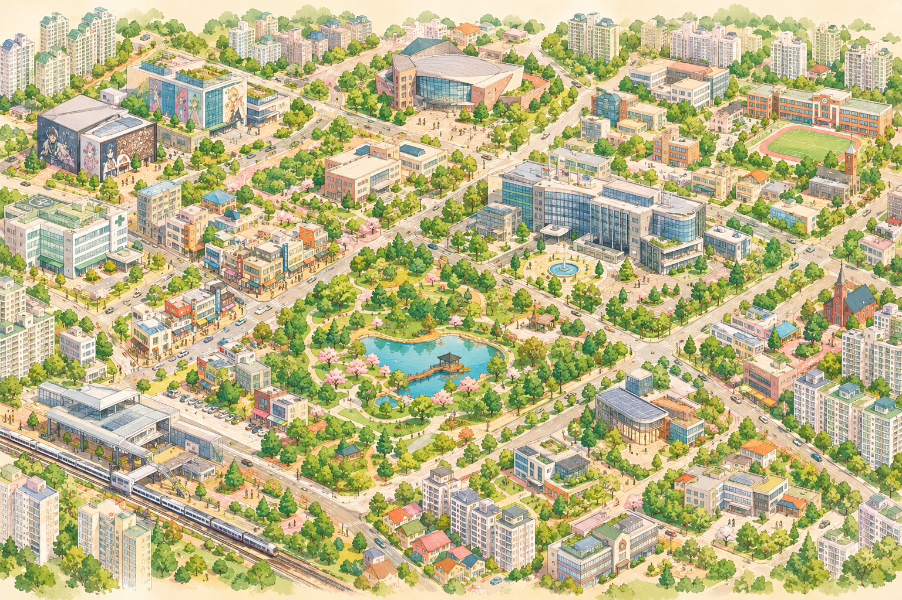

OUR SOUND ATLAS
진로의 풍경을 소리로 기록하다
지도 속 장소를 눌러 학생들이 만든 사운드스케이프 작품을 감상해 보세요.
✦ BCGH * SOUND MAP
장소의 핀을 눌러 작품 열기

공개 승인 작품
※ 원미구를 모티프로 한 일러스트이며, 실제 도로·행정경계·시설 위치와 다를 수 있습니다.
LISTEN & EXPLORE
공개된 작품
학생 이름 대신 작품명과 진로 분야 중심으로 감상합니다.